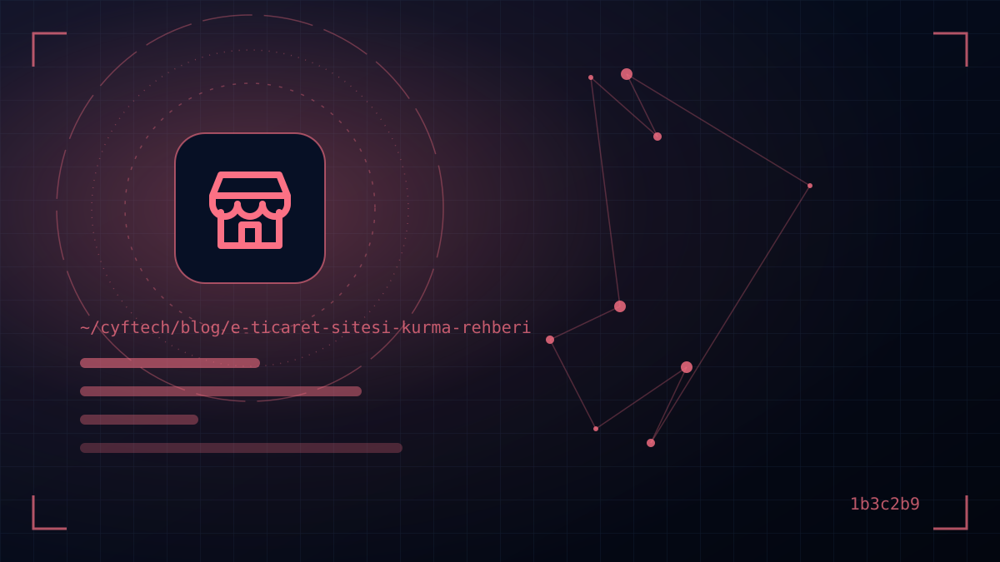

منتجك جاهز وسعرك منافس، لكن سؤال «كيف أبدأ البيع عبر الإنترنت؟» لا يزال غير واضح؟ عملية إنشاء متجر إلكتروني أكثر بكثير من بضع صور جميلة للمنتجات: يجب إعداد الضرائب وبنية الدفع والنصوص القانونية والتوصيل بشكل صحيح ككل متكامل.
نشرح في هذا الدليل بالترتيب الخطوات التي عليك اتباعها لفتح متجرك الإلكتروني الخاص في تركيا: البنية الضريبية والشركة، واختيار المنصة، ونقاط البيع الافتراضية ومؤسسات الدفع، والتسجيل في ETBİS وتشريعات البيع عن بُعد، وعمليات الشحن والإرجاع، وأخيرًا صفحات المنتجات وSEO التي ستجلب الطلبات الأولى.
وفي CYF Tech أضفنا داخل كل قسم ملاحظات عن أكثر الأخطاء التي نراها في مشاريع التجارة الإلكترونية، سواء على المنصات الجاهزة أو في المشاريع التي نبرمجها من الصفر. والهدف ألا تقول بعد إطلاق الموقع: «ليتنا عرفنا هذا من البداية».
الشركة والبنية الضريبية قبل بدء التجارة الإلكترونية
إذا كنت ستبيع بانتظام عبر موقعك الخاص فأنت بحاجة إلى هوية تجارية. فخطوات مثل طلب نقطة البيع الافتراضية واتفاقية الشحن والتسجيل في ETBİS كلها تتطلب رقمًا ضريبيًا. لذا فأول خطوة هي اختيار نوع الشركة المناسب لنشاطك.
| الخيار | لمن يناسب؟ | ما يجب الانتباه إليه |
|---|---|---|
| المؤسسة الفردية | رواد الأعمال المبتدئون الذين يتوقعون مبيعات منخفضة إلى متوسطة | تأسيس سريع ورخيص؛ تمتد المسؤولية إلى الأموال الشخصية |
| شركة ذات مسؤولية محدودة | الهياكل ذات الشركاء، ومن لديهم خطط للنمو والاستثمار | تكلفة التأسيس والمحاسبة أعلى؛ المسؤولية محدودة بالشركة |
| إعفاء الحرفيين (Esnaf muafiyeti) | من يبيعون منتجات منزلية الصنع على نطاق محدود | النطاق وحدود المبالغ ضيقة؛ اسأل مستشارك المالي عن مدى أهليتك |
بعد فتح الملف الضريبي يجب أيضًا مناقشة نظام الفوترة. فالشركات التي تبيع عبر الإنترنت تصبح ملزمة بالانتقال إلى e-Arşiv وe-Fatura عند تجاوز حدود معينة للمبيعات؛ وبما أن إدارة الإيرادات (GİB) تحدّث هذه الحدود من حين لآخر، فتأكد من الوضع الحالي مع محاسبك. وقدرة منصة متجرك على التكامل مع مزوّد للفوترة الإلكترونية تُلغي من البداية عبء إصدار الفواتير يدويًا لكل طلب.
منصة التجارة الإلكترونية: باقة جاهزة أم مفتوحة المصدر أم برمجيات مخصصة؟
أهم قرار تقني في إنشاء متجر إلكتروني هو المنصة. في تركيا ثلاثة طرق رئيسية، ولكلٍّ منها توازن مختلف بين التكلفة والمرونة والتبعية:
| الطريق | المزايا | العيوب |
|---|---|---|
| باقة تجارة إلكترونية جاهزة (بالإيجار) | إطلاق سريع، وتكاملات جاهزة مع نقاط البيع الافتراضية والشحن، والصيانة التقنية على المزوّد | إيجار شهري/سنوي، وقيود في التصميم والميزات، وتبعية للمنصة |
| مفتوحة المصدر (WooCommerce وغيرها) | تكلفة ترخيص منخفضة، ومنظومة إضافات واسعة | التحديثات والأمان والسرعة مسؤوليتك؛ وتراكم الإضافات يبطئ الموقع |
| برمجيات مخصصة | توافق تام مع سير عملك، وتكاملات ERP/المخزون/B2B، وملكية كاملة | استثمار أولي ومدة تطوير أعلى |
بالنسبة لعلامة تختبر السوق بعدد قليل من المنتجات، قد تكون الباقة الجاهزة بداية منطقية. أما إذا احتجت إلى تسعير للموزعين، أو مخزون متعدد المستودعات، أو قواعد حملات خاصة، أو تكامل مع أنظمة المحاسبة والإنتاج، فستصطدم بحدود الباقة الجاهزة سريعًا جدًا. وقد قارنّا تفاصيل هذا القرار في مقالنا البنية الجاهزة أم البرمجيات المخصصة بالتفصيل.
أيًّا كان الطريق الذي تختاره، اسأل حتمًا
- هل أستطيع تصدير بيانات المنتجات والعملاء والطلبات؟ وماذا يحدث إذا غيّرت المنصة؟
- باسم من سُجّل النطاق، ومن يملك الوصول إلى لوحة الإدارة؟
- هل نقطة البيع الافتراضية وشركة الشحن ومزوّد الفوترة الإلكترونية التي أريدها مدعومة؟
- ما مدى سرعة فتح الموقع على الجوال؟ هل يمكنني رؤية نتيجة PageSpeed لمتجر نموذجي؟
اختيار نقطة البيع الافتراضية ومؤسسة الدفع
لديك خياران لقبول الدفع بالبطاقة: الحصول على نقطة بيع افتراضية مباشرة من بنك، أو التحصيل عبر مؤسسة دفع مرخّصة من البنك المركزي التركي (TCMB). تعمل مؤسسات الدفع في إطار القانون رقم 6493، وتُنشر القائمة المحدّثة للمؤسسات المرخّصة على موقع TCMB.
- نقطة البيع الافتراضية البنكية: نسبة العمولة قابلة للتفاوض عادةً، لكن قد يُطلب للتقديم أن يكون للشركة تاريخ ومبيعات معينة. والعمل مع عدة بنوك يزيد خيارات التقسيط.
- مؤسسة الدفع: التقديم والتكامل أسرع، ويتوفر التقسيط لجميع بطاقات البنوك بتكامل واحد. في المقابل قد تكون العمولة أعلى قليلًا، وتختلف مدة تحويل الأموال إلى حسابك (فترة التسوية) وفق العقد.
عند مقارنة العروض لا تنظر إلى نسبة العمولة وحدها. فمدة التسوية، ومن يتحمل فرق الأجل في البيع بالتقسيط، وإجراءات الاسترداد والاعتراض (chargeback)، ودعم البطاقات المحفوظة (الدفع بنقرة واحدة)، والرسوم السنوية الثابتة هي ما يحدد التكلفة الإجمالية.
قد تزيد الحوالة/EFT والدفع عند الاستلام والمحافظ الرقمية التحويل أيضًا؛ لكن بما أن الدفع عند الاستلام يرفع مخاطر الإرجاع والطلبات الوهمية، فيجب تقييمه مع سياسة رسوم شركة الشحن.
التسجيل في ETBİS وعقد البيع عن بُعد والالتزامات القانونية الأخرى
تُنظَّم التجارة الإلكترونية في تركيا بالقانون رقم 6563 بشأن تنظيم التجارة الإلكترونية، والقانون رقم 6502 بشأن حماية المستهلك واللوائح التابعة لهما. إذا كنت تبيع عبر موقعك الخاص فالبنود التالية إلزامية:
- 1. التسجيل في ETBİS — يتم التسجيل في نظام معلومات التجارة الإلكترونية التابع لوزارة التجارة (eticaret.gov.tr) بالدخول عبر e-Devlet قبل بدء النشاط. وعند تغيّر البيانات يجب تحديثها خلال 30 يومًا. ويُنشر رمز التحقق/رمز QR الممنوح بعد التسجيل في أسفل الموقع. ووفقًا لبيان الوزارة، لا يلتزم من يبيعون عبر الأسواق الإلكترونية المحلية فقط بتسجيل منفصل.
- 2. نموذج المعلومات المسبقة وعقد البيع عن بُعد — وفقًا للائحة العقود عن بُعد، يجب إعلام المستهلك قبل تأكيد الطلب ببيانات البائع، والخصائص الأساسية للمنتج، والسعر الإجمالي شاملًا الضرائب، والتوصيل، وحق الانسحاب؛ ويجب الحصول على هذا التأكيد صراحةً في خطوة الدفع.
- 3. حق الانسحاب والإرجاع — يحق للمستهلك كقاعدة عامة الانسحاب دون إبداء أسباب خلال 14 يومًا من تاريخ استلام السلعة. ويلتزم البائع بإعادة جميع المبالغ المحصّلة خلال 14 يومًا من تاريخ استلام إشعار الانسحاب. وتُعدّد اللائحة الاستثناءات مثل المنتجات المصنوعة حسب الطلب أو سريعة التلف.
- 4. نصوص KVKK — نص الإفصاح، ونص الموافقة الصريحة عند الحاجة، وسياسة ملفات تعريف الارتباط. ويجب تناول أذونات العضوية والطلب والتسويق كلٌّ على حدة (انظر موقع متوافق مع KVKK).
- 5. الموافقة على الرسائل التجارية الإلكترونية — لإرسال رسائل الحملات عبر البريد الإلكتروني والرسائل النصية يجب الحصول على موافقة المتلقي وتسجيل الموافقات في نظام إدارة الرسائل (İYS).
- 6. بيانات الهوية التجارية — يجب أن تظهر في الموقع بشكل يسهل العثور عليه: الاسم التجاري، والعنوان، والرقم الضريبي، ورقم MERSİS (إن وُجد)، وبيانات التواصل، وطرق تقديم شكاوى المستهلكين.
خطّط لعمليات الشحن والمخزون والإرجاع من البداية
نصف تجربة العميل يحدث بعد تقديم الطلب. والتوصيل السريع والشفاف من أقوى أسباب تكرار الشراء.
- اتفاقية الشحن: احصل على أسعار حسب الوزن الحجمي من أكثر من شركة. وبفضل التكامل يُنشأ باركود الشحنة ورقم التتبع تلقائيًا ويُرسلان إلى العميل عبر رسالة نصية/بريد إلكتروني.
- حد الشحن المجاني: تحديد حد أعلى قليلًا من متوسط قيمة السلة من أبسط طرق زيادة حجم السلة.
- مزامنة المخزون: إذا كنت تبيع في المتجر والموقع والسوق الإلكتروني معًا، فيجب إدارة المخزون من مصدر واحد؛ وإلا ستبيع منتجًا غير متوفر وتضطر إلى الإلغاء.
- مسار الإرجاع: يجب أن يتمكن العميل من بدء طلب الإرجاع من حسابه، وأن يُنشأ رمز شحن الإرجاع تلقائيًا. تابع عمليات الإرجاع من اللوحة كي لا تفوّت مهلة الإرجاع القانونية البالغة 14 يومًا.
التغليف أيضًا جزء من العلامة التجارية: تغليف متين دون مبالغة، مع الفاتورة وملاحظة شكر قصيرة، يقلل نسبة الإرجاع والتقييمات السلبية.
صفحات منتجات تبيع وSEO للتجارة الإلكترونية
الصفحات التي تجلب الزيارات والمبيعات فعليًا في المتجر الإلكتروني هي صفحات المنتجات والفئات. وبما أن الزائر لا يستطيع لمس المنتج، فعلى الصفحة أن تعوّض هذا النقص.
- وصف منتج أصلي: بدلًا من نسخ نص الشركة المصنّعة، اكتب بكلماتك سيناريو الاستخدام والمقاسات والمواد ومعلومات العناية.
- صور حقيقية ومتعددة الزوايا: أضف إلى صورة المنتج على خلفية بيضاء صورة استخدام، وإن أمكن مقطع فيديو قصيرًا؛ واضغط الصور بصيغة WebP/AVIF.
- السعر والمخزون ومدة التوصيل: معلومة توصيل واضحة مثل «يُشحن غدًا» ترفع نسبة الإضافة إلى السلة.
- البيانات المنظمة: بفضل مخططات Product وOffer وReview يمكن أن تظهر معلومات السعر والتقييم في نتائج البحث.
- السرعة: صفحات المنتجات البطيئة، خاصة على الجوال، تُفقدك الترتيب والتحويل معًا. للاطلاع على خطوات القياس والتحسين يمكنك مراجعة مقالنا سرعة الموقع وCore Web Vitals بهذا الشأن.
اكتب نصًا تمهيديًا قصيرًا لصفحات الفئات أيضًا، وامنع صفحات التصفية من إنتاج آلاف الصفحات المكررة في محركات البحث باستخدام الوسوم القانونية (canonical). واجعل خطوة الدفع قصيرة قدر الإمكان: خيار الشراء دون تسجيل، والإكمال التلقائي للعنوان، والدفع في صفحة واحدة تخفض نسبة التخلي عن السلة بشكل ملحوظ.
أفضل صفحة منتج في التجارة الإلكترونية هي التي تجيب عن السؤال الذي سيخطر للعميل قبل أن يطرحه.
بعد الإطلاق: الزيارات والقياس والتوازن مع الأسواق الإلكترونية
لا تبدأ المبيعات يوم إطلاق الموقع؛ عليك أنت أن تجلب الزيارات. وفي الأشهر الأولى يعطي المزيج التالي نتائج جيدة عادةً:
- اختبار سريع عبر Google Shopping وإعلانات البحث، وفي الوقت نفسه زيارات عضوية طويلة الأمد عبر SEO
- محتوى استخدام المنتجات على وسائل التواصل الاجتماعي، وحملات بريد إلكتروني للعملاء الحاليين
- اكتساب الشهرة عبر الأسواق الإلكترونية، مع توجيه العملاء المتكررين إلى موقعك الخاص
الأسواق الإلكترونية تحقق مبيعات سريعة لكنها تأخذ عمولات مرتفعة ولا تكون أنت مالك العلاقة مع العميل. أما موقعك الخاص فيعني قيمة العلامة وبيانات العملاء وهامش الربح. والاستراتيجية السليمة غالبًا هي إدارة الاثنين معًا.
لا يمكنك تطوير ما لا تقيسه: أعدّ أحداث التجارة الإلكترونية في Google Analytics 4 (عرض المنتج، الإضافة إلى السلة، بدء الدفع، الشراء)، واربط Search Console، وركّز كل شهر على تحسين الخطوة الأكثر تخليًا.
- هل فُتح الملف الضريبي وتحدد نظام e-Arşiv/e-Fatura؟
- هل تم التسجيل في ETBİS وهل رمز التحقق في أسفل الموقع؟
- هل يُطلب تأكيد نموذج المعلومات المسبقة وعقد البيع عن بُعد في خطوة الدفع؟
- هل نص الإفصاح وفق KVKK وسياسة ملفات الارتباط ومسار موافقات İYS جاهزة؟
- هل اختُبرت نقطة البيع الافتراضية مع 3D Secure وجُرّب سيناريو الاسترداد؟
- هل يعمل تكامل الشحن ورسالة التتبع ورمز الإرجاع؟
- هل تُفتح صفحات المنتجات بسرعة على الجوال، وهل أُضيفت البيانات المنظمة؟
الأسئلة الشائعة
هل يلزم تأسيس شركة لإنشاء متجر إلكتروني؟
نعم إذا كنت ستبيع بانتظام واستمرار. فطلب نقطة البيع الافتراضية واتفاقية الشحن والتسجيل في ETBİS تتطلب ملفًا ضريبيًا. ويتوفر خيار إعفاء الحرفيين لمن يبيعون منتجات منزلية الصنع على نطاق محدود، لكن استشر مستشارك المالي بشأن أهليتك.
هل التسجيل في ETBİS إلزامي، وهل هو مدفوع؟
التسجيل في ETBİS إلزامي للشركات التي تبيع عبر موقعها أو تطبيقها الخاص، ويجب أن يتم قبل بدء النشاط. ويتم التسجيل مجانًا عبر eticaret.gov.tr باستخدام e-Devlet. ولا يلتزم من يبيعون في الأسواق الإلكترونية المحلية فقط بتسجيل منفصل.
أيهما أفضل: نقطة البيع الافتراضية أم مؤسسة الدفع؟
تقدّم مؤسسات الدفع للشركات الناشئة تقديمًا سريعًا وميزة التقسيط لجميع البطاقات بتكامل واحد. ومع نمو المبيعات قد يصبح الاتفاق المباشر مع البنوك على نقطة بيع افتراضية أفضل من حيث العمولة. وعند اتخاذ القرار قارن مدة التسوية والرسوم الثابتة إلى جانب العمولة.
كم يومًا مدة حق الانسحاب في المتجر الإلكتروني؟
وفقًا للائحة العقود عن بُعد، يحق للمستهلك كقاعدة عامة الانسحاب دون إبداء أسباب خلال 14 يومًا من تاريخ استلام السلعة. وعلى البائع إعادة المبلغ خلال 14 يومًا من إشعار الانسحاب. وتُعدّد اللائحة الاستثناءات مثل المنتجات المصنوعة حسب الطلب.
كم يستغرق إنشاء متجر إلكتروني؟
مع منصة جاهزة، وإذا كان المحتوى والمنتجات جاهزين، يمكن الإطلاق خلال بضعة أسابيع. أما المشاريع التي تتطلب تصميمًا خاصًا أو تكاملات فتستغرق عادةً بضعة أشهر. وأكثر ما يطيل المدة عادةً هو محتوى المنتجات وإجراءات الموافقة على نقطة البيع الافتراضية.
كلمة أخيرة
إنشاء متجر إلكتروني يعني بناء هيكل شركة صحيح، ومنصة تناسب الاحتياج، ودفع آمن، ونصوص قانونية كاملة، وسلسلة توصيل سلسة في آن واحد. وإذا نقص أحد هذه الأجزاء فإما ألا تبدأ المبيعات أصلًا، أو تظهر المشكلة عند أول طلب إرجاع.
في CYF Tech، حيث لا تكفي المنصات الجاهزة، نطوّر برمجيات تجارة إلكترونية وويب مخصصة لاحتياجك، ونُعدّ تكاملات الدفع والشحن من البداية إلى النهاية. إذا أردت مناقشة مشروعك، راسلنا؛ لنقيّم وضعك الحالي معًا.